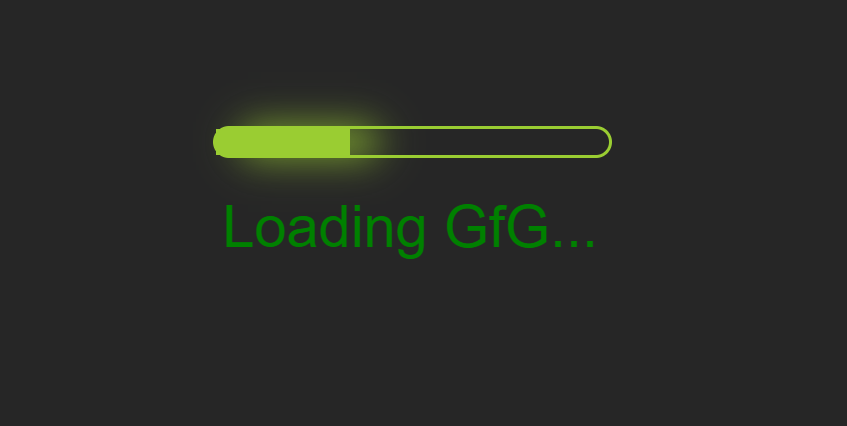

Animacion
Ideas Principales.
- Css permite animar la mayoria de los elementos HTML sin usar JavaScript
- Cuando especifica estilos, CSS dentro de la regla @keyframes, la animacon cambiara del estilo actual al estilo nuevo.
- Para que una animacion funcione, se debe vincular la animacion a un elemento
- Animation duration: especifica cuanto tiempo debe transcurrir una animacion para completar un ciclo.
Apuntes de Clase.
Para que una animacion funcione, se debe vincular la animacion a un elemento.
Animation- iteration-count
especifica el numero de veces que se debe reproducir un a animacion. Se expresa con numeros cerrados y se puede usar tambien infinito.
Animation - delay
especifica un retraso para el inicio de una animacion. Se expresa en segundos. Se pueden utilizar unidades negativas
Animation-play-state
especifica si la animacion se esta ejecutando (running) o esta en pausa (paused)
Animation-timing-function
especifica la curva de velocidad de la animacion
- Linear: especifica una animacion con la misma velocidad de princio a fin
- ease: especifica una animacion con un inicio lento, luego rapido y luego termina lentamente
- ease-in: especifica una animacion con un inicio lento
- ease-out: especifica una animacion con un final lento
- ease-in-out: especifica una animacion con un inicio y un final lento
- cubic-bezier: permite definir sus propios valores en una funcion cubic-bezier.
Animation-fill-mode
especifica un estilo para el elemento cuando la animacion no se esta reproduciendo.
- none: Valor predeterminado. La animacion no aplicara ningun estilo al elemento antes o despues de ejecutarlo.
- forwards: El elemento retendra los valores de estilo establecidos por el ultimo fotograma clave.
- backwards: El elemento obtendra los valores de estilo establecidos por el primer fotograma clave.
- both: La animacion seguira las reglas tanto para adelante como para atras, extendiendo las propiedades de animacion en ambas direcciones.
Animation
Propiedad rapida para configurar todas las propiedades de la animacion, por ejemplo, los siguientes fragmentos expresan lo mismo.
